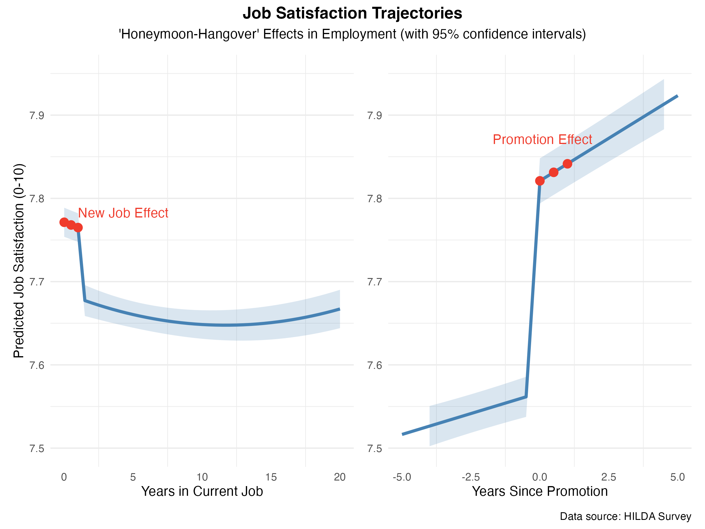

Ever noticed how a colleague starts a new job brimming with enthusiasm, only to seem a bit less excited a year later? That burst of initial happiness — and the gradual fade that often follows — is so common it has a name in organisational psychology: the "honeymoon-hangover" effect.
We tapped into two decades of HILDA Survey data which has tracked job satisfaction over time for more than 17,000 Australian full-time workers since 2001. We used a discontinuous mixed-effects model to follow individuals' satisfaction over time and isolate the effects of two key transitions: moving beyond the first year of employment and receiving a promotion.

When an employee starts a new job, there is usually an immediate lift in how happy they feel at work (left panel, "New Job Effect"). This is the honeymoon effect. After about 12–18 months in the job, many employees hit a satisfaction slump — our data shows scores dipping roughly 0.1 points once the first year is over. Over the next few years, satisfaction continues to slowly decline. This creeping decline is the hangover effect.
The Promotion Effect: A Breath of Fresh Air
If starting a new job gives a honeymoon boost, what about moving up within an organisation? Our findings show that promotions deliver a significant lift in job satisfaction for employees, effectively creating a new "honeymoon" of their own (right panel, "Promotion Effect"). The year an employee is promoted, their satisfaction rating jumps by about 0.25 points on the 0–10 scale.
Better yet, the boost is sustained. Unlike a new-job honeymoon that eventually dips, after a promotion satisfaction keeps rising for the next few years. Even five years later, the typical promoted employee is still about 0.3 points more satisfied than they likely would be without that promotion.
Practical Implications for HR and Leadership
Expect the Slump: It's normal for enthusiasm to taper off after the first year or two. Don't panic if a star hire's satisfaction dips by year 3 — but do monitor their sentiment around that time so you can tackle any issues early.
Re-energise at 12–18 Months: Plan a boost around the one-year mark. Refresh the role with new challenges or learning opportunities. Injecting some novelty at this stage prevents boredom and extends the honeymoon vibe.
Leverage Internal Mobility: Offer pathways for internal moves or promotions to combat mid-tenure malaise. Instead of waiting for employees to seek excitement elsewhere, give them chances to try new roles or step up within the company.
From a big-picture perspective, these findings highlight the importance of career progression and thoughtful people management. If you leave employees in a static situation, expect their satisfaction to stagnate or decline. But if you can offer growth — whether via promotions, new assignments, or skill development — you effectively give them a fresh honeymoon phase and keep them engaged longer with your organisation.